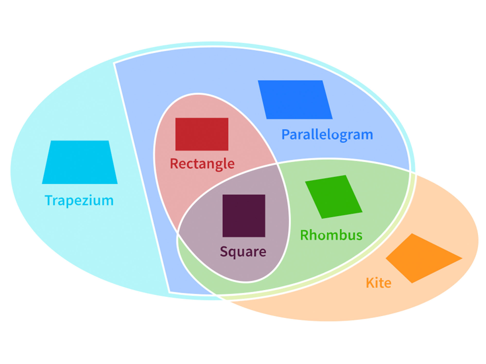
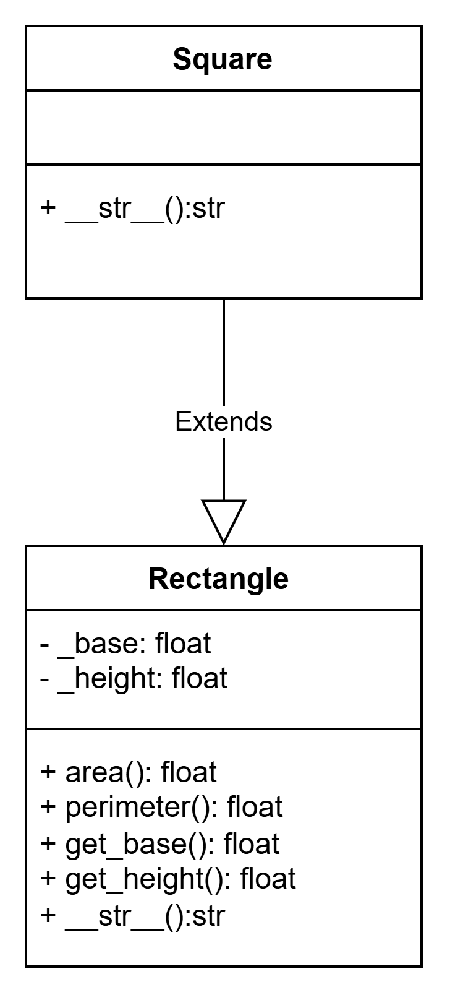
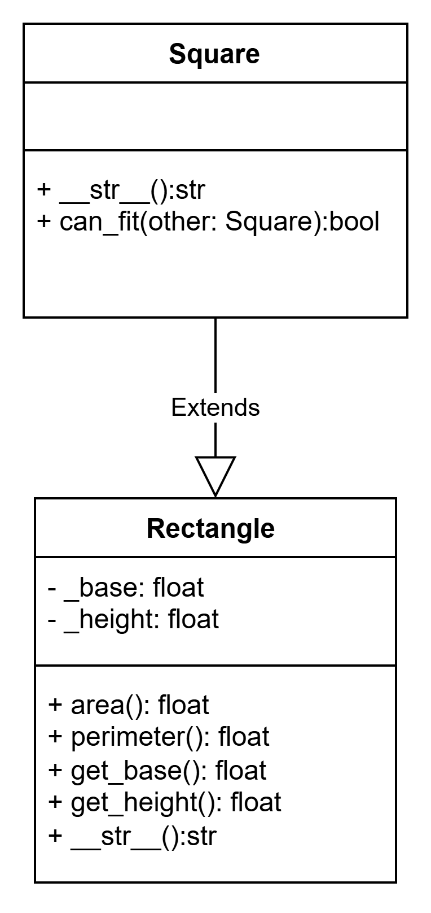

Unit 05: Inheritance and Subclasses
In Unit 03, we looked at how we can build complex classes using composition — that is, combining smaller classes together to model a has-a relationship. Now, we’ll look at how to model an is-a relationship between classes using inheritance!
Square & Rectangle
Creating a Square
Suppose we want to create a new class called Square. We might start off implementing it like this:
1 2 3 4 5 6 7 8 9 10 11 12 13 14 15 16 17 18 19 | |
Looks familiar, right? It’s basically the exact same code as our Rectangle class from Unit 01. That’s because a square is really just a special case of a rectangle — it’s a rectangle where the base and height are equal. So we can say that a Square is a Rectangle — it’s a subset of rectangles.
In other words, a Square is-a Rectangle.

Inheriting a Rectangle
Instead of rewriting all of Rectangle’s code in Square, we can use inheritance to reuse it:
1 2 3 4 5 6 | |
Just like that, we're done! Square now has access to all the methods in Rectangle, automatically.
The class diagram for this looks like:

Now we can say that Square is a subclass of Rectangle — or using the parent-child terminology, Square is the child and Rectangle is the parent. Or the Square extends Rectangle.
1 2 3 4 5 6 7 8 9 10 11 12 13 14 15 16 17 18 19 | |
Method Overriding
You might’ve noticed that we defined a __str__ method again inside our Square class. That’s called method overriding.
1 2 3 4 5 6 | |
We are replacing the __str__ method from Rectangle with a new version specific to Square.
If we didn’t define the __str__ method in Square:
1 2 3 | |
Then this code:
1 2 | |
Would give us:
1 | |
This happens because Square didn't define its own __str__, so it just uses the one it inherited from Rectangle.
But if we do define __str__ in Square:
1 2 3 4 5 6 | |
Then the same code:
1 2 | |
Will now give us:
1 | |
Here, we’ve overridden the __str__ method from Rectangle with a new one tailored for Square.
Method Resolution Order (MRO)
When you call a method on an object, Python doesn’t just randomly guess which method it should call. Python will follows a rule called the Method Resolution Order (MRO).
Python first checks the child class (like Square). If the method exists there, it uses it. If not, it "moves up" to the parent (like Rectangle) and checks there and so on. So in our case, Python sees that Square has a __str__ method in Square, and uses it. If it didn’t, it would use the one from Rectangle.
Note: Unlike other languages, python doesn’t care how many arguments the method takes — it only checks the method name to decide if the method is overridden. If a child and parent both have a method with the same name, the child’s version always takes priority.
Adding Methods to Subclasses
On top of just inheriting methods and attributes from our parent class, we can also define new methods in the child class to extend or specialize its behavior.
Let’s go back to our Rectangle and Square example. Suppose we want the Square class to have a method that tells us whether another square can fit inside a given area. That’s something specific to squares — our Rectangle class doesn’t need to know about it. We can add that method directly in Square:
1 2 3 4 5 6 7 8 9 10 11 12 | |
The new can_fit method is only available on Square, not Rectangle — and that’s fine! That’s the power of subclassing: we can start with shared behavior and add specific features when needed.

Negative example: When NOT to Use Inheritance
We’ve learned that Square can inherit from Rectangle, because a square is a special kind of rectangle. That’s an example of inheritance being used correctly — it makes sense. But not everything that shares some features should be related by inheritance.
Let’s look at a case where inheritance goes wrong. Let say we want our library to have a name attribute. So we see that book class has the _name attribute, we will make the library inherit it!
Imagine someone wrote the following:
1 2 3 4 5 6 7 8 | |
This looks like Library is a kind of Book. But that doesn’t really make sense — a library isn’t a book, it just has books. But later in the code, say we have a function that read a book:
1 2 3 4 5 6 7 8 | |
That is not right. A library isn’t something you read — it contains things you read. This is an example of using inheritance just to “reuse” the name variable from Book. But it’s the wrong relationship. A library has books. It is NOT a book.
Discussion
Discussion questions (please discuss this with your teacher!)
- When do we use inheritance over composition?
- What is overriding and when might it be useful to override a method in a child class?
- How does python resolve a method with the same name in both the child and parent class? If a method is not available in child class, where does Python check next?